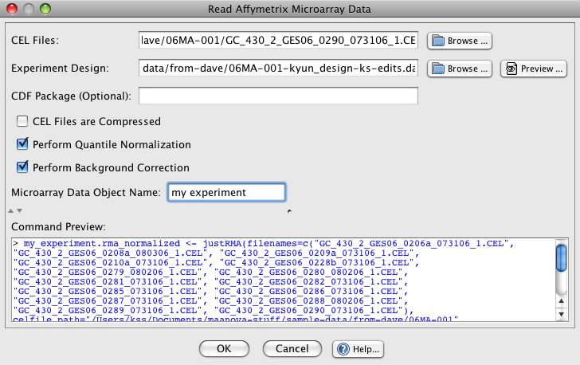
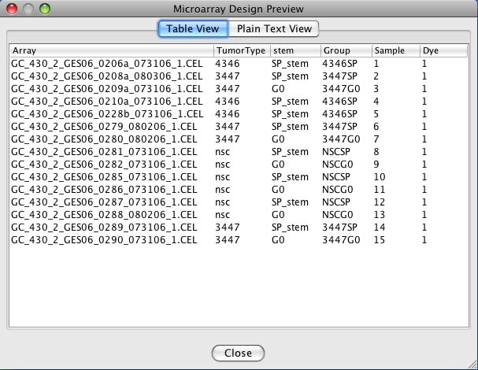

J/maanova allows you to directly load and normalize CEL files via the File->Load Microarray Data->Load Affymetrix Microarray Data... menu item. This method uses the underlying affy R package and read.madata(...) to perform the data load and normalization. Note that the values in the design file's Array column must match the file name of the CEL files as shown in the example screenshots below.

Load Affymetrix Data Dialog
CEL Files: a comma-separated list of CEL files that will be loaded. The easiest way to create this list is to use the Browse.... The browse dialog allows you to select multiple files at once. For example on Windows you can use CTRL+A to select all files in a directory or SHIFT+LEFT_CLICK to select a range of files.
Experiment Design: the experiment design file should be a tab-delimited file. The values in the design file's leftmost column should match the CEL file names (if there is a header row then name this column "Array"). For more details about design file requirements see R/maanova's documentation for the read.madata(...) function. As an example here is a preview of a simple valid design file:
CDF Package (Optional): the CDF file determines which probes will be grouped together to form probesets in your CEL files. Typically you can leave this blank and the affy package will locate a suitable CDF file

An Example Design Preview
CEL Files are Compressed: check this box if the CEL files that you are loading are compressed
Perform Quantile Normalization: checking this box tells the affy package to use quantile normalization on the microarray data
Performa Background Correction: checking this box will tell the affy package to perform background correction on the microarray data
Microarray Data Object Name: choose a name for the data object that is descriptive of the experiment that you are performing. This name will be used in the project tree to represent all of the data for this experiment.